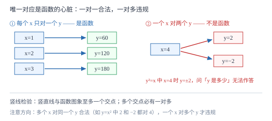

函数的概念
两个变量，一个变另一个跟着变，而且每取一个值都只有唯一的结果与之对应——这就是函数。「唯一」两个字是整个定义的心脏：一对一、一对一是函数，一对多不是。
| 所属主题 | 函数 |
|---|---|
| 所属模块 | 代数 |
| 课标学段 | 第四学段（7~9 年级） |
| 前置知识 | 平面直角坐标系与函数 |
| 核心素养 | 抽象能力模型观念 |
教材定位
人民教育出版社《人教版（2024版）义务教育教科书·数学》
八年级下册第22章 函数22.1 函数的概念
对应八下 22.1 函数的概念。2024 版教材把函数概念单列成章（变量与常量、函数的定义、函数值）；七下第 9 章的坐标系是它的前奏（见 m1-03-01）。本篇把「唯一对应」立为判断的核心判据，并给足反例。
说明
在一个变化过程中，数值保持不变的量叫常量，可以取不同数值的量叫变量。汽车以 60 千米/时匀速行驶，速度 60 是常量，行驶时间 t 与路程 s 是变量。
函数的定义：一般地，在一个变化过程中，如果有两个变量 x 与 y，并且对于 x 的每一个确定的值，y 都有唯一确定的值与其对应，那么我们就说 x 是自变量，y 是 x 的函数。如果当 x=a 时 y=b，那么 b 叫做当自变量的值为 a 时的函数值。
判断两件事是不是函数关系，只看一条：给一个 x，能否确定唯一的 y。写成式子的（如 s=60t）自然好查；给表格的逐行查有没有重复的 x 对应不同的 y；给图象的画一条竖线，竖线与图象至多一个交点就是函数。y^2=x（x≥ 0）中 x=4 时 y=2 或 -2，一个 x 对出两个 y，不是函数；y=x^2 中每个 x 的平方值唯一，是函数——方向反过来，结论就翻过来。
使用场景
行程、售价、气温、水池注水——初中接触的几乎所有实际模型都是函数。分辨「谁是自变量」是建模第一步：通常时间是自变量，但也可以选「售价为自变量、利润为函数」，选谁看问题问什么。
中考对函数概念的考查多在选择题：给一个对应关系（式子、表格或图象），判断是否为函数、求函数值、写自变量取值范围。图象题里「竖线检验」最快。
注意点
自变量取值范围必须写全，三类限制缺一不可：分母不为零（y=1/x-2 要求 x≠ 2）、被开方数非负（y=\sqrtx-3 要求 x≥ 3）、实际意义（行驶时间 t 要 t≥ 0）。
「y 随 x 变化」不等于函数：y^2=x 里 y 也随 x 变，但一个 x 对两个 y，不是函数。变化的说法人人会写，唯一对应才是门槛。
函数值是「当 x=a 时 y 的值」，是一个数，不是一段关系。求函数值就是代入：s=60t 中 t=1.5 时函数值为 90。
证明

图 1：函数的判据是「唯一对应」——每个 x 只许对应一个 y；一个 x 对出两个 y（如 y²=x 中 x=4 时 y=±2）就不是函数
证明
结论 1「唯一对应」是函数定义不可放松的条件。
函数回答的问题是「给定 x，y 是多少」。若允许一个 x 对应两个 y，这个问题就没有答案：y^2=x 中 x=4 时 y 可以是 2 也可以是 -2，问「x=4 时 y 是多少」无法作答，依赖它的后续计算（画图象、求最值）全部失效。反过来，一对一是允许的：y=x 中 x=2 对 y=2，x=3 对 y=3，每个 x 仍有唯一结果。甚至常数函数 y=5 中所有 x 对同一个 y=5，也满足唯一对应——「多个 x 对一个 y」不违规，「一个 x 对多个 y」才违规。
关键一步依据是函数定义中的「唯一」二字；方向是 x 指向 y，多个 x 可以挤到同一个 y，一个 x 不许分叉。
结论 2自变量取值范围由「式子有意义 + 实际意义」共同决定，两者取交集。
式子 y=60/t 要求 t≠ 0（分母不为零）；若 t 表示行驶时间，实际意义再要求 t>0，两者取交集得 t>0。只按式子得 t≠ 0，就会容忍「行驶了负一小时」这种荒谬输入；只按实际意义得 t>0 而忽略式子限制，如 y=\sqrtt-3 里漏掉 t≥ 3，代入 t=1 根式无意义。两类限制各管各的，取公共部分才完整。
关键一步依据是代数式有意义的条件与实际背景对变量的约束同时生效。
结论 3同一变化过程中，自变量与函数的角色可以互换，但换了之后对应关系要重新检验。
s=60t 中 t 是自变量、s 是函数；反过来由 s=60t 解出 t=s/60，s 成了自变量、t 是函数，对应依然唯一（每个 s 对唯一的 t），互换成立。但 y=x^2（x 任意）换方向成 x^2=y 后，y=4 对 x=2 与 x=-2 两个值，唯一对应破坏，x 不再是 y 的函数。可见互换不是白送的，要逐个检验。
关键一步依据是函数定义对方向敏感；检验方法仍是「给一个自变量的值，看结果是否唯一」。
动手实验
记录烧开一壶水：每 30 秒读一次温度计，得（0 秒，25℃）、（30 秒，48℃）、（60 秒，72℃）、（90 秒，95℃）、（100 秒，100℃）。逐行检查：没有哪个时刻对应两个温度——时间到温度是函数。再倒过来问「温度 72℃ 出现在哪个时刻」：若升温过程严格单调，答案唯一，温度到时间也是函数；若水沸腾后温度停在 100℃ 不动，则 100℃ 对应一段长时间，温度到时间的一对多出现了，反方向不再是函数。亲手做一遍，能同时体会「方向」与「唯一」两件事。
解题思路
判断函数关系三步：①确认有两个变量；②确定方向（谁是自变量）；③检验唯一对应——式子看结构、表格查重、图象画竖线。三步走完再下结论，不要凭「在变化」就喊函数。
求函数值就是代入计算，但要先检查代入值是否在取值范围内。y=1/x-2 求 x=2 处的函数值没有意义，答案应写「x=2 不在取值范围内」，而不是硬算。
写取值范围按清单走：分母为零没有？根号里为负没有？实际量允许吗？三问过后再写答案，范围漏条件是这一章最隐蔽的失分点。
按场景的例题
例 1（场景：行程与速度） 匀速行驶
汽车以 60 千米/时匀速行驶，从出发起计时。①写出路程 s（千米）与时间 t（时）的关系，指出变量与常量；②\tfrac32 小时时的函数值是多少？③若这次行程最多行驶 5 小时，写出 t 的取值范围。
解：①s=60t，60 是常量，t 与 s 是变量，t 为自变量。②t=1.5 时 s=60× 1.5=90 千米。验算：0.5 时走 30 千米，1.5 时是 3 个半小时段，30× 3=90 ✓。③结合实际意义 t≥ 0 与行程上限，得 0≤ t≤ 5。只写 t≥ 0 或只写 t≤ 5 都不完整。
答：s=60t（t 为自变量）；t=1.5 时函数值为 90；0≤ t≤ 5。
例 2（场景：物理情境） 气温记录
某日气象站记录：8 时 21℃，12 时 28℃，14 时 30℃，16 时 29℃。①时刻到气温是不是函数关系？说明理由；②气温 30℃ 对应的时刻唯一吗？这说明反方向是什么情况？
解：①每个时刻（8、12、14、16 时）都只对应一个气温，唯一对应成立，时刻是自变量、气温是它的函数。②30℃ 只在 14 时出现一次，本次记录里反方向也唯一；但一般地，若某天气温在上午与下午两次达到 25℃（升上去又降回来），一个气温对两个时刻，反方向就不满足唯一对应，气温到时刻不是函数。方向一换，必须重新检验——这正是函数定义的方向性。
答：①是函数（每个时刻唯一对应一个气温）；②本次记录中唯一，但一般情况下反方向会出现一对多，气温到时刻不一定是函数。
例 3（场景：销售与利润） 文具定价
某文具店销售一种笔记本，进价每本 8 元。设售价为 x 元/本（x>8），每天能卖出 100-2(x-15) 本。①写出每天利润 w（元）关于售价 x 的关系式；②w 是 x 的函数吗？③售价定为 20 元时，每天利润是多少？此时每天卖多少本？
解：①每天利润 =（售价−进价）× 销量：w=(x-8)≤ft[100-2(x-15)]=(x-8)(130-2x)。②对每个 x>8，右端有唯一值，w 是 x 的函数。③x=20 时销量 130-40=90 本，w=(20-8)× 90=1080 元。验算：每本赚 12 元，12× 90=1080 ✓。注意销量式子 100-2(x-15) 里 x=20 代入是 100-10=90，先算括号内 x-15=5 再乘 2，运算顺序不能乱。
答：w=(x-8)(130-2x)（w 是 x 的函数）；售价 20 元时每天利润 1080 元、卖 90 本。
常用推论
常数函数 y=c 也是函数：自变量怎么变，函数值恒为 c，唯一对应毫无悬念。图象是一条水平线。
「竖线检验」是图象判断函数的通用工具：任何竖直线与图象至多一个交点，则是函数；出现两个交点，必有某个 x 对应两个 y。
自变量取值范围三类限制可以叠加：y=\frac\sqrtx-1x-3 同时要求 x≥ 1 与 x≠ 3，答案是 x≥ 1 且 x≠ 3。
易错点
错认为 y^2=x（x≥ 0）是函数，因为「y 随 x 变化」。
为什么错x=4 时 y=± 2，一个 x 对应两个 y，唯一对应被破坏。
正确y^2=x 不是函数；y=x^2 才是函数（每个 x 的平方唯一）。方向决定结论。
错写 s=60t 的取值范围时只写 t≥ 0，漏掉题目给的行程上限。
为什么错取值范围 = 式子限制 ∩ 实际意义，题目「最多行驶 5 小时」也是实际限制的一部分。
正确0≤ t≤ 5。
错把「多个 x 对应同一个 y」当成不是函数。
为什么错定义限制的是「一个 x 对多个 y」；反过来多个 x 挤到同一个 y（如 y=x^2 中 x=2 与 x=-2 都对 y=4）完全合法。
正确y=x^2 是函数；一对一是合规的，一对多才是违规的。
直观理解
函数是一台自动售货机：你按一个按钮（自变量的值），机器吐出确定的一件商品（函数值）。同一按钮按一万次，出来的都是同一样东西——这叫唯一对应。要是某个按钮会随机吐出两种商品，这台机器就没法用于「预测」，也就不配叫函数。至于不同按钮吐出同一款商品（卖完了都吐纸巾），那是允许的。